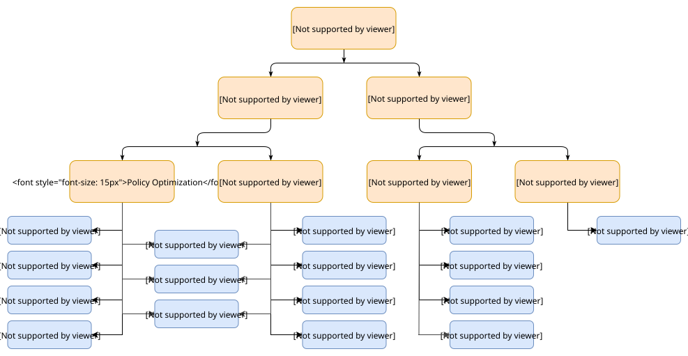

策略梯度方法笔记
使用强化学习实现机器人的连续控制，策略梯度方法是首选。下面即对强化学习中策略梯度方法进行总结。
核心概念
免模型学习（Model-Free） vs 有模型学习（Model-Based）
不同强化学习算法最重要的区分点之一就是智能体是否能完整了解或学习到所在环境的模型。 环境的模型是指一个预测状态转换和奖励的函数。
有模型学习最大的优势在于智能体能够 提前考虑来进行规划，走到每一步的时候，都提前尝试未来可能的选择，然后明确地从这些候选项中进行选择。智能体可以把预先规划的结果提取为学习策略。这其中最著名的例子就是 AlphaZero。这个方法起作用的时候，可以大幅度提升采样效率 —— 相对于那些没有模型的方法。
有模型学习最大的缺点就是智能体往往不能获得环境的真实模型。如果智能体想在一个场景下使用模型，那它必须完全从经验中学习，这会带来很多挑战。最大的挑战就是，智能体探索出来的模型和真实模型之间存在误差，而这种误差会导致智能体在学习到的模型中表现很好，但在真实的环境中表现得不好（甚至很差）。基于模型的学习从根本上讲是非常困难的，即使你愿意花费大量的时间和计算力，最终的结果也可能达不到预期的效果。
使用模型的算法叫做有模型学习，不基于模型的叫做免模型学习。虽然免模型学习放弃了有模型学习在样本效率方面的潜在收益，但是他们往往更加易于实现和调整。
同策略（on-policy） vs 异策略（off-policy）
异策略（off-policy）的代表算法Q-learning，亦称SarasMax，其采样的策略（用于执行，behavior policy) 和更新Q值的策略（用于评估，target policy）不一样，行为策略为贪心策略，而target policy为确定性策略，即选择最Q值最优的action。
同策略（on-policy）的代表算法Sarsa，亦称on-line Q-learning，其采样的策略（用于执行，behavior policy) 和更新Q值的策略（用于评估，target policy）一样,行为策略和目标策略均为贪心策略。Sarsa的每次Q值更新需要知道前一步的状态（state）、前一步的动作（action）、奖赏值（reward）、当前状态（state）、将要执行的动作（action），由此得名Sarsa算法。
在线（online） vs 离线（offline）
在计算机科学中，在线机器学习是一种机器学习的方法，其中数据按顺序可用，并且用于在每个步骤中为将来的数据更新我们的最佳预测器，而不是通过学习生成最佳预测器的批处理学习技术 一次对整个训练数据集。 在线学习是机器学习领域中的一种常用技术，在该领域中，计算无法训练整个数据集是不可行的，因此需要核心算法。 它也用于算法必须动态适应数据中的新模式的情况下，或者在数据本身随时间而变的情况下（例如，股价预测）使用。 在线学习算法可能易于遭受灾难性干扰，这一问题可以通过增量学习方法来解决。
在机器学习中，采用离线学习的系统在初始训练阶段完成后不会改变其对目标函数的近似值。这些系统通常也是渴望学习的示例。
在在线学习中，只有一组可能的元素是已知的，而在离线学习中，学习者则知道这些元素的标识以及它们显示的顺序。
强化学习分类

在机器人学习领域，目前主要有三类有效的免模型的深度强化学习算法：
- TRPO,PPO
- DDPG及其拓展（D4PG,TD3等）
- Soft Q-Learning, Soft Actor-Critic
PPO算法是TRPO（Trust Region Policy Optimization）算法的近似，该算法更能适应大规模的运算，是目前最主流的DRL算法，同时面向离散控制和连续控制，在OpenAI Five上取得了巨大成功。但是PPO是一种on-policy的算法，也就是PPO面临着严重的sample inefficiency，需要巨量的采样才能学习，这对于真实的机器人训练来说，是无法接受的。
DDPG及其拓展则是DeepMind开发的面向连续控制的off policy算法，相对PPO 更sample efficient。DDPG训练的是一种确定性策略deterministic policy，即每一个state下都只考虑最优的一个动作。
Soft Actor-Critic (SAC)是面向Maximum Entropy Reinforcement learning 开发的一种off policy算法，和DDPG相比，Soft Actor-Critic使用的是随机策略stochastic policy，相比确定性策略具有一定的优势（具体后面分析）。Soft Actor-Critic在公开的benchmark中取得了非常好的效果，并且能直接应用到真实机器人上。
符号定义
下表给出强化学习常用符号定义。
| 符号 | 含义 |
|---|---|
| $s \in \mathcal{S}$ | 状态。 |
| $a \in \mathcal{A}$ | 动作。 |
| $r \in \mathcal{R}$ | 回报。 |
| $S_{t}, A_{t}, R_{t}$ | 一个轨迹中第t个时间步对应的状态、动作以及回报。我可能会偶尔使用$s_t,a_t,r_t$来代替。 |
| $\gamma$ | 折扣因子；用于惩罚未来回报中的不确定性；$0<γ≤1$。 |
| $G_{t}$ | 累积回报；或者说累积折扣回报；$G_{t}=\sum_{k=0}^{\infty} \gamma^{k} R_{t+k+1}$。 |
| $P\left(s^{\prime}, r\vert s, a\right)$ | 在当前状态s下采取动作a后转移到下一个状态 s′ 并得到回报 r 的概率。 |
| $\pi(a\vert s)$ | 随机策略（智能体行为逻辑）；$\pi_{\theta}( .)$代表由θ参数化的策略。 |
| $μ(s)$ | 确定性策略；虽然也可以把确定性策略记为$π(s)$，但是采用一个不同的字母可以让我们更容易分辨一个策略到底是确定性的还是随机的。π或者μ都是强化学习算法要学习的目标。 |
| $V(s)$ | 状态-值函数衡量状态s的期望累积回报；$V_{w}( .)$代表由w参数化的状态-值函数。 |
| $V^{\pi}(s)$ | 当智能体遵循策略π时状态s的期望累积回报；$V^{\pi}(s)=\mathbb{E}{a \sim \pi}\left[G{t}\vert S_{t}=s\right]$ |
| $Q(s,a)$ | 动作-值函数，与状态-值函数类似，但是它衡量在状态s下采取动作a后的期望累积回报；$Q_{w}( .)$代表由w参数化的动作-值函数。 |
| $Q^{\pi}(s, a)$ | 与$V^{\pi}(s)$类似，当智能体遵循策略π时，在状态s下采取动作a后的期望累积回报；$Q^{\pi}(s, a)=\mathbb{E}{a \sim \pi}\left[G{t}\vert S_{t}=s,A_{t}=a\right]$ |
| $A(s, a)$ | 优势函数，$A(s,a)=Q(s,a)−V(s)$；可以认为优势函数是加强版本的动作-值函数，但是由于它采用状态-值函数作为基准使得它具有更小的方差。 |
策略梯度方法
强化学习的目标是为智能体找到一个最优的行为策略从而获取最大的回报。策略梯度方法主要特点在于直接对策略进行建模并优化。策略通常被建模为由θ参数化的函数$\pi_{\theta}(a | s)$。回报（目标）函数的值受到该策略的直接影响，因而可以采用很多算法来对θ进行优化来最大化回报（目标）函数。
回报（目标）函数定义如下：
$$ J(\theta)=E_{\tau \sim \pi_{\theta}} [R(\tau)]=\sum_{s \in \mathcal{S}} d^{\pi}(s) V^{\pi}(s)=\sum_{s \in \mathcal{S}} d^{\pi}(s) \sum_{a \in \mathcal{A}} \pi_{\theta}(a | s) Q^{\pi}(s, a) $$
其中$d^{\pi}(s)$代表由$\pi_{\theta}$引出的马尔科夫链的平稳分布（π下的在线策略状态分布）。
使用梯度上升方法，我们可以将参数 $\theta$ 往梯度 $\nabla_{\theta} J(\theta)$ 给出的方向进行改变从而去找到最优的 $\theta$ 使得其对应的策略 $\pi_{\theta}$ 能够给智能体带来最大的期望累积回报。
$$\theta_{k+1} = \theta_k + \alpha \left. \nabla_{\theta} J(\pi_{\theta}) \right|_{\theta_k}.$$
策略性能的梯度 $\nabla_{\theta} J(\pi_{\theta})$ ，通常被称为 策略梯度 ，优化策略的算法通常被称为 策略算法 。
策略梯度定理
$$\begin{aligned} \nabla_\theta J(\theta) &\propto \sum_{s \in \mathcal{S}} d^\pi(s) \sum_{a \in \mathcal{A}} Q^\pi(s, a) \nabla_\theta \pi_\theta(a \vert s) &\ &= \sum_{s \in \mathcal{S}} d^\pi(s) \sum_{a \in \mathcal{A}} \pi_\theta(a \vert s) Q^\pi(s, a) \frac{\nabla_\theta \pi_\theta(a \vert s)}{\pi_\theta(a \vert s)} &\ &= \mathbb{E}\pi [Q^\pi(s, a) \nabla\theta \ln \pi_\theta(a \vert s)] & \scriptstyle{\text{; 因为 } (\ln x)’ = 1/x} \end{aligned}$$
$\mathbb{E}{\pi}$代表$\mathbb{E}{s \sim d_{\pi}, a \sim \pi_{\theta}}$，下标表示遵循策略$\pi_{\theta}$（在线策略）时状态以及动作的分布。
深度确定性策略梯度 （DDPG）
DDPG（Lillicrap, et al., 2015）是深度确定性策略梯度（Deep Deterministic Policy Gradient）的缩写，是一个结合了DPG以及DQN的无模型离线演员-评论家算法。DQN（深度Q网络）通过经验回访以及冻结目标网络的方式来稳定Q函数的训练过程。原始的DQN算法只能在离散的动作空间上使用，DDPG算法在学习一个确定性策略的同时通过演员-评论家框架将其扩展到连续的动作空间中。
近似策略优化PPO
DQN
SAC
参考链接
- 策略梯度方法,by Abracadabra.
- A (Long) Peek into Reinforcement Learning,by Lilian Weng.
- 第三部分：策略优化介绍,by spinningup.
- 深度强化学习研究笔记,by jackhuang.
- 异策略（Q-learning） v.s. 同策略（Sarsa）,by MOMO.
- Online_machine_learning,by wikipedia.
- 最前沿：深度解读Soft Actor-Critic 算法,by Flood Sung.
- 重要性采样（Importance Sampling）,by 时雨.
- TRPO论文推导,by Ja1r0.
- 强化学习进阶 第七讲 TRPO,by 天津包子馅儿.
- 强化学习–信赖域系方法：TRPO、PPO,by 秋曾万.
- 强化学习(8)——DQN,by 自由而无用.
- 理解策略梯度算法,by SIGAI.
- SAC论文解读以及简易代码复现,by 已注销.
- PPO(Proximal Policy Optimization)近端策略优化算法,by shura_R.
- Policy Gradient Algorithms,by lilianweng.
- TRPO论文推导,by Ja1r0.
- 第九章：连续动作空间的确定性策略,by anesck.